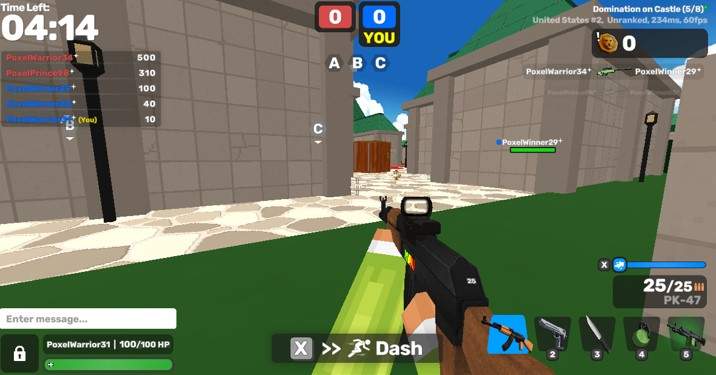
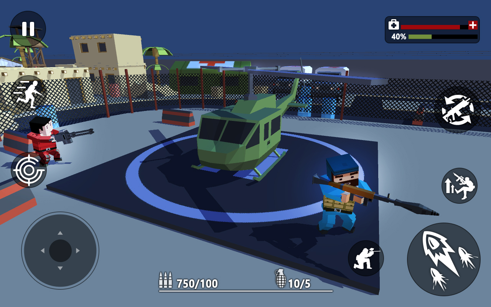
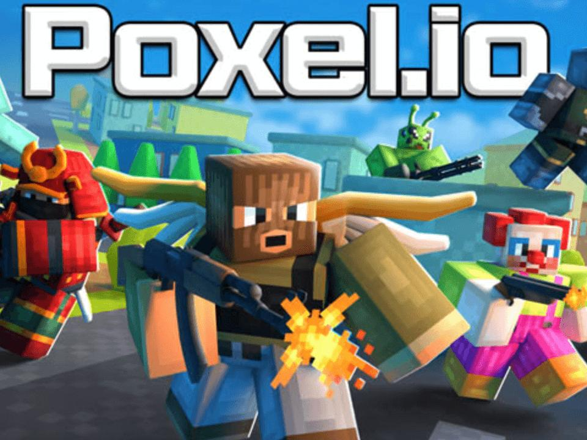

Poxel.io throws you straight into pixel-style FPS combat with zero hand-holding. No tutorials, no loading screens — you pick a weapon, jump into a match, and start shooting. Within seconds you'll understand why this browser-based shooter has been climbing the charts in 2026.
Here's the deal: Poxel.io runs on a blocky, Minecraft-inspired 3D engine with over 30 maps and 20+ weapons. It's built by the same team behind Veck.io and Kour.io, and that experience shows. The netcode is tight, movement feels responsive, and every match plays differently depending on map layout and weapon choices.
What separates good Poxel players from great ones? Weapon knowledge and map awareness. I've spent hours testing different loadouts across all four core modes, and I'm going to break down everything you need to know — from which shotgun dominates close quarters to how to actually win Kill Confirmed without just chasing kills.
Play now at: poxel.io
🎯 Game Basics & Controls
Poxel.io keeps things simple on the surface: you spawn, you shoot, you try not to die. But the depth comes from weapon selection, map positioning, and understanding each game mode's scoring system.

Controls
- WASD / Arrow Keys: Movement
- Mouse: Aim and look around
- Left Click: Shoot / Attack
- Right Click: Aim down sights (snipers)
- Spacebar: Jump
- Shift: Sprint
- Q: Swap weapon
- E: Grenade / Special ability
- R: Reload
- Tab: Scoreboard
Progression System
Every match earns you PX coins and Gems based on performance. Complete daily and weekly missions for bonus currency. PX unlocks over 1,500 cosmetic items — skins, characters, hats, back items. No pay-to-win mechanics here; everything you unlock is purely visual. Your stats track K/D ratio, wins, accuracy, and time played.
Pro tip: Focus on mission completion early. The PX rewards from missions outpace match earnings by 3x in the first few days.
🎮 All Game Modes Explained

Poxel.io offers four core public modes plus rotating special events. Each mode demands a completely different approach — what works in FFA will get you killed in Domination.
FFA — Free For All
Every player for themselves. Highest kill count wins. This is pure chaos and the best mode for practicing raw aim. No teammates to rely on, no objectives to distract you — just you against everyone.
Best weapons: Shotgun (Bullseye line) for close-quarters maps, Sniper (Cowboy line) for open maps.
TDM — Team Deathmatch
Two teams, shared kill score. Communication matters here — even without voice chat, watch your teammates' positions on the minimap and push together. A coordinated 3-player push beats a solo rush every time.
Best weapons: Assault rifles for versatile engagements. SMGs for aggressive flanking.
KC — Kill Confirmed
This is where most beginners waste their potential. When you kill someone, they drop a dog tag. The kill only counts if you or a teammate picks it up. If the enemy grabs it first, your kill doesn't register. This mode rewards spatial awareness and map control over raw shooting skill.
Strategy: After getting a kill, immediately move to collect the tag. Don't push further into enemy territory. Control the mid-map where tags are most contested.
Domination
Team-based objective mode. Capture and hold control points scattered across the map. Points generate score over time — the team with the most accumulated points wins. This mode values positioning and defense over kills.
Strategy: One player defends each captured point while others push forward. Shotguns excel at holding tight capture zones. Don't chase kills across the map — stay near your objectives.
Special Modes (Rotating)
- Mega Domination: Larger map, more capture points, bigger team sizes
- Megaheads: Headshot vulnerability increased — precision weapons dominate
- Gun Gamble: Weapons randomize on each kill — adapt on the fly
- Rocket Arena: Everyone gets RPGs — pure explosive chaos
🔫 Best Weapons & Loadouts

Poxel.io features 20+ weapons across five categories. There's no single "best" weapon — it all depends on the map and mode. Here's what actually works based on testing:
Shotguns — Close-Range Dominance
- Bullseye Line: Double-Barrel → DB-1G → DB-2G → Pump. The DB-2G is the standout — two-shot kill at close range with decent mobility.
- Best for: Domination (holding capture points), FFA on small maps, indoor corridors
Snipers — Long-Range Precision
- Cowboy Line: AWP → Heavy Sniper → AWP-1G → AWP-2G. One-shot headshot potential at any distance. The AWP-2G rewards patience and positioning.
- Best for: Open maps, Kill Confirmed (pick off enemies from distance, then grab tags safely)
Assault Rifles — Versatile All-Rounders
- AK-47 Family: Balanced damage, manageable recoil, effective at medium range. The safe pick for any map you haven't memorized yet.
- Best for: TDM, medium-sized maps, beginners still learning map layouts
SMGs — Aggressive Rush
- Fast-Firing Line: High fire rate, lower per-bullet damage, excellent mobility. Perfect for aggressive players who like to close distance fast.
- Best for: Flanking in TDM, aggressive FFA playstyles, small-to-medium maps
Explosives — Area Denial
- Terrorist Line: RPG → Shockwave RPG → Redwave RPG. The Redwave RPG deals splash damage and can be used for mobility (rocket jumping). Essential for Domination point defense.
- Best for: Domination (denying capture points), Rocket Arena mode, breaking entrenched positions
You can pick up weapons from eliminated players. If someone drops an RPG near your spawn, grab it immediately — don't wait to unlock it through progression. Fixed weapon spawns also exist on every map; learn their locations for free upgrades mid-match.
🗺️ Map Strategies
With 30+ maps in rotation, you can't memorize them all at once. But a few universal principles apply everywhere:
Universal Map Rules
- High Ground Wins: Rooftops and elevated platforms give you sight advantage and make you harder to hit. Always take the high ground when contested.
- Corridor = Shotgun/SMG: Tight hallways and indoor areas favor close-range weapons. Bringing a sniper into a corridor fight is a death sentence.
- Open Areas = Sniper/AR: Large outdoor maps with long sight lines favor precision weapons. Use cover between pushes.
- Vertical Maps = Explosives: Maps with multiple levels reward RPG usage for area denial and rocket jumping to reach unexpected positions.
Learning Maps Efficiently
Don't try to learn all 30 maps at once. Pick 2-3 maps and play them exclusively for a week. You'll learn spawn points, weapon locations, and common camping spots. Once those feel comfortable, rotate to new maps. Most top players specialize in 5-6 maps rather than being mediocre on all of them.
💎 Pro Tips & Strategies
This is the #1 killer of new players. Standing still for more than 2 seconds makes you an easy target. Strafe while shooting, jump around corners, and never stay in one spot after getting a kill. Movement is your best armor in Poxel.io.
Check the map name when you join a server. Long sight lines? Grab a sniper. Tight corridors? Shotgun. Unknown layout? AK-47 is your safety net. Switching weapons between rounds based on the next map takes 5 seconds and wins you matches.
In TDM and Domination, K/D ratio doesn't determine the winner — score does. A player with 5 kills but 3 captured points contributes more than someone with 20 kills and 0 objectives. Stop chasing the leaderboard and start playing to win.
In KC mode, don't just collect your own tags. If you see an enemy heading toward a fallen teammate's tag, intercept them. Tag denial is just as valuable as tag collection. Control the center of the map where most kills happen.
Keep your back against walls whenever possible. This eliminates 180 degrees of potential attack angles. In Poxel.io, enemies spawn from all directions — reducing your exposure angles is the simplest way to survive longer.
Daily and weekly missions give 3x more PX than regular play. Check your mission list before each session and play modes that align with active missions. If a mission requires "win 3 Domination matches," don't waste time in FFA.
❓ Frequently Asked Questions
Is Poxel.io free to play?
Yes, completely free. No downloads required for browser play. All 1,500+ cosmetic items are unlockable through gameplay — no pay-to-win mechanics.
Can I play Poxel.io on mobile?
Yes, there's an Android app with touch controls and optional aim assist. Cross-progression syncs your stats and unlocks between browser and mobile.
How many weapons are in Poxel.io?
Over 20 weapons across 5 categories: Shotguns, Snipers, Assault Rifles, SMGs, and Explosives. Each category has an upgrade line with 4 tiers.
What's the best weapon for beginners?
The AK-47 family. It's forgiving at medium range, has manageable recoil, and works on every map type. Once you learn map layouts, branch into shotguns or snipers based on your preferred playstyle.
How do I unlock skins and cosmetics?
Complete matches to earn PX coins and Gems. Finish daily and weekly missions for bonus currency. All cosmetics are earned through gameplay — there's no premium shop.
Can I create private matches with friends?
Yes, you can create custom rooms and invite friends directly. No account required for basic play, but registering tracks your stats and progression.
📝 Conclusion
Poxel.io nails the "quick match, fair fight" formula that makes browser FPS games great. No downloads, no pay-to-win, just pure skill-based combat across dozens of maps and weapons. Master your weapon-to-map matchups, play objectives in team modes, and keep moving — that's the whole secret.
Ready to dominate? Jump into Poxel.io and start climbing that leaderboard!
Last updated: June 14, 2026
Written by the iogameguide.com team